香港珍寺遊戯2、これにてお開きなわけですが、「今回、物件数少なくない？」との声が聞こえてきそうなので香港で見かけたよしなしごとについてグダグダと喋っておまけ、ということにさせてもらいます。コレで勘弁してけろ！
供養の風景
香港は言わずと知れた超過密都市である。
超高層住宅に住み、超高層ビルのオフィスに勤める。世界有数の高額の地価の上に暮らす彼等にとって墓地は二の次三の次。当然のことながら墓地は郊外の傾斜地に追いやられる事となる。
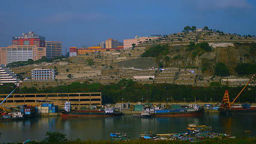
それでも風水大好きご先祖大好きなお土地柄だけに南向きの斜面に墓地が造られることが多いようだ。
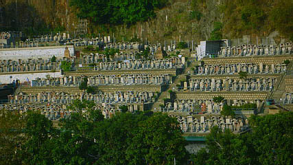
ズラズラ〜っと整然と並んだ墓を見ると、この地で死ぬのは生きるのと同じくらい厳しいモノなのだ、と実感する。
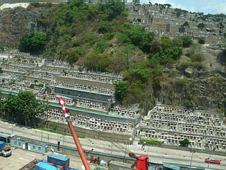
先にも述べたが今回は清明祭の時期だったのであちこちで墓参りに行く人の姿を目にした。
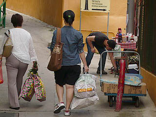
これが標準的な墓参りグッズの量。
詳しい中身は想像するしかないが、食べ物をはじめとした供え物だろう。
香港、台湾、華南と似た先祖供養の文化圏である沖縄にも清明祭の風習はある。
沖縄では墓参りをした後、墓地で御先祖様と宴会をするというが、香港ではそんなスペースはないので、近所の公園のベンチで遺族が食事していたりする。何となく世知辛い眺めであったが、これもまた土地不足ゆえ仕方あるまい。
また、墓地が多いとされる郊外の沙田に萬佛寺を見に行った際、駅前のレストランは参拝客で大行列でした。
沙田名物の鳩料理が食べたかったのにい〜。
そして中華圏恒例の供養グッズ探し。
故人があの世で困らないように様々な現世グッズを焚きあげてあの世に送るものだ。
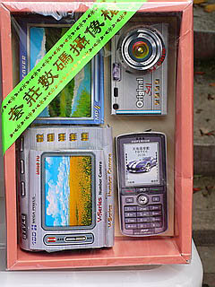 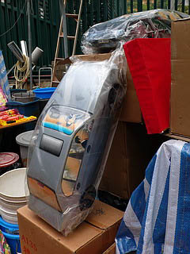
近年は電化製品が多く、その精巧な造りが返って面白かったのだが、このところのトレンドは食べ物。
蒸篭に入った点心や豚の丸焼きなど香港ぽいモノが紙で作られている。
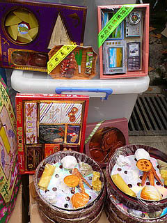 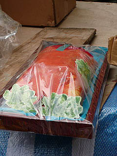
そのプロダクト魂に感激。とくに豚の丸焼きなどは厚みを付けて微妙な量感を表現している。
今まで最先端のIT製品が幅を利かせていたが、今後は食方面にシフトチェンジしていくのだろうか。
オードブル盛り合わせとか和食とか、しまいには鍋とかラーメンとか、本来燃やせない汁モノまでじゃんじゃん作ってもらいたいものだ。
もしかして、この世界にもエコブームが来たりして…そうするとやっぱ紙のエコバッグをお焚きあげ？
一方こちらは伝統的な冥土の土産屋。
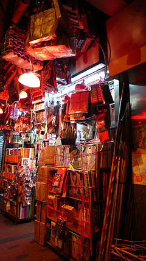 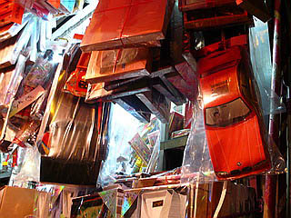
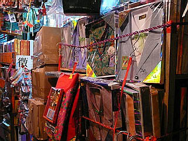
やはり主力商品は箱入りの紙シャツである。
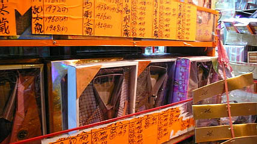
ピクトさん
香港では日本よりも早くピクトさんが活躍していたように思う。
「小心地滑」の看板は中華圏、特に香港では必須アイテムだ。
小心は注意の意味。最近は日本でも見かけるが、最初香港で見たときは「何て親切なんだ！」と感動したものである。
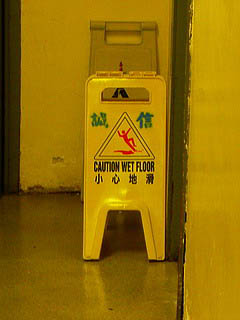 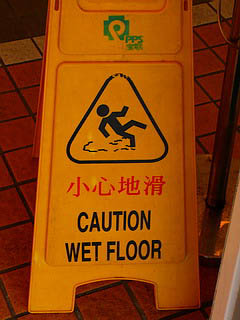
この「ああ〜っ」てな感じの滑りっぷりが堪らんです。
最近は様々なバリエーションがある。
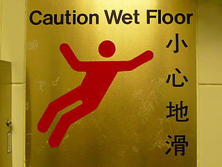 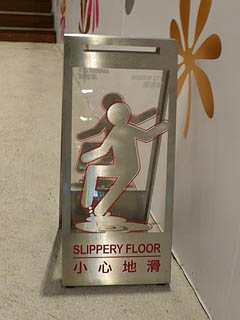
勿論注意を促すのは地滑だけでない。
これは昂坪360で見かけたピクトさん。
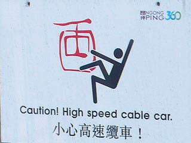
その他様々な場面でピクトさんは活躍している。
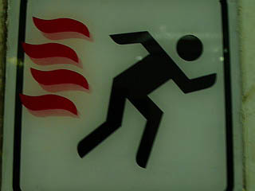 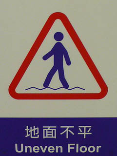
様々な言語の行き交う多民族社会においてこそピクトさんは活躍するのであろう。
工場ビル
以前、雑誌で見たことのある工場ビル。空港から市内に向かう電車から見えた。
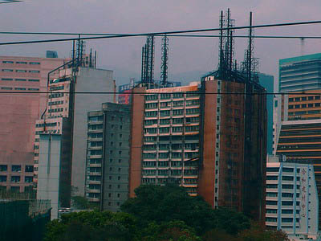
元々普通の集合住宅だったのだろうが、いつの間にか建物全体が工場になってしまい、各フロアの排煙のためのダクトや煙突がビルを覆ってしまった、という凄い建物。お隣のビルも煙突化してますね。
壁を伝うダクトが木の根のように見えて、まるで鉄の樹に侵食されてるみたい。
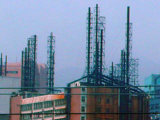
ある意味香港を象徴する建物だ。
それにしても無茶しますねえ。
澳門点描
マカオに行ってみた。
特に目的はないが何となく行ってみたかったのだ。
マカオ行きの船は満員。入管は長蛇の列。
何でも金持ちの中国人が大挙して押し寄せているのだとか。
マカオの街全体が中国人の財布の紐を緩めるべく新しいカジノをバンバン建てている。
ここもそんな新しいカジノのひとつ。歩道の人間の大きさと建物を比べていただきたし。
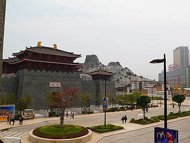
目的もなく、といったが、唯一の目的はここのポルトガル料理屋。
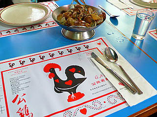 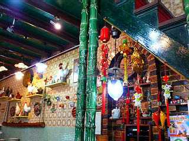
ここがうまいんだな。
ポルトガルの食文化が大航海時代に東へ東へと進出していくにつれ様々な現地のエッセンスを吸収して最終的には長崎の卓袱料理になるのだが、その過程をマカオで見る(味わう）ことができるのだ。
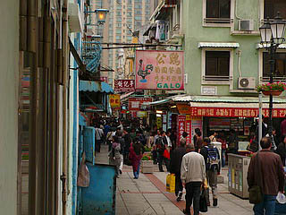
プラナカン、ババニョニャ、クレオールと呼び名は様々だが、この現象は単に食文化だけでなく建築、宗教、音楽と様々なジャンルにわたって起こっている。
マカオの街は香港よりものんびりしていて、ポルトガル風味の建物が良く残っている。
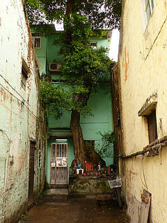
中国とポルトガルの文化のクロスロード、といえば聞こえが良いが実際は結構ボロボロだったりする。
アルコーブや出窓に鉄格子をつけるのがマカオ流なのだろうか。見た目的にも面白かった。
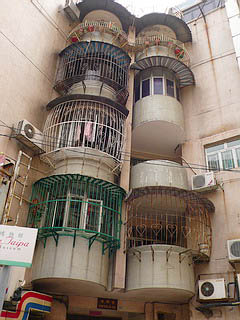 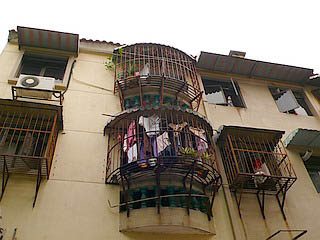
とある公園に立つポルトガルの偉い人(多分）。
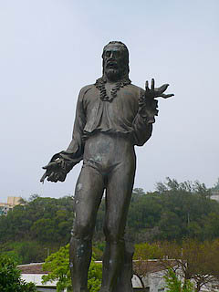
隣のベンチでは墓参りから帰ってきた人達がお弁当を膝の上にのせてムシャムシャ…
海沿いにある大観音像。
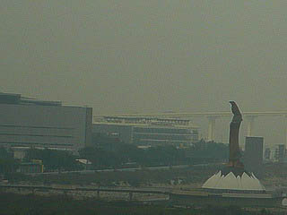
高さ20メートル。台座の内部は仏教センターになっている。
本来であれば真っ先に行かなければならないであろう場所なのだが、何となくつまんなさそうなので遠くから眺めるだけに留めておきました。
マカオの中心部は言わずと知れた大カジノ街
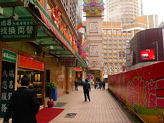
一攫千金を果たした人用の金行（金製品を売る店）。
これから一攫千金を果たしにいく人用の両替屋。
一攫千金を果たせなかった人用のサラ金などが軒を連ねる。
今までの香港人日本人西洋人の顧客をはるかに越える規模で大陸からの金持ちが押し寄せているマカオ。
街には中国人を（ってここも中国ですが）受け入れるための奇抜なデザインの建物がバンバン建設中。
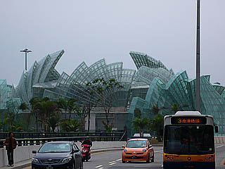
老舗カジノのリスボアもこのように新館を建ててチャイニーズギャンブラーの受け入れ態勢を図っている。
にしてもなんだ、このビル。微妙にパチンコっぽいように思うのは私だけでしょうか？
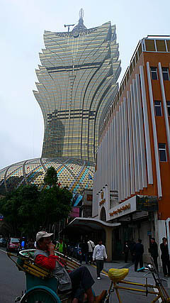
下層部はガラス張りの金の卵。
繕いようのないマカオの現実が映し出されている。
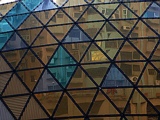
有名なセントポール寺院から見るとこんな感じ。ポッキリいかないか心配でしょうがないですね。
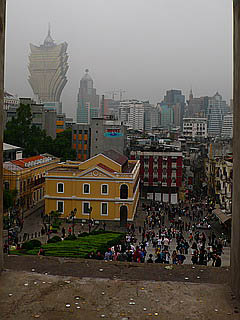
取り繕ったような虚構の街も一歩裏に回ればそこは現実の風景が。
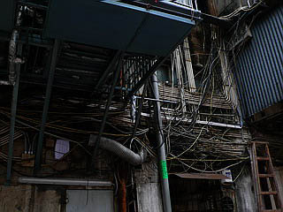 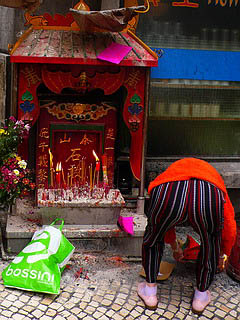
フェリーターミナルではお姉ちゃん2人がチップ型のチョコを配ってました。
また、カジノに来てね。ということなのだろう。
このチョコを配ってたお姉ちゃん、よく見ると２人ともオカマだったような…
香港点描
香港島と九龍を結ぶフェリー乗り場には様々な人間模様が交錯する。
大陸を追われた法輪功もここでは大手を振って中国政府の圧制をアピールしていた。
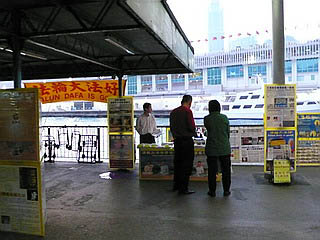
中国政府による拷問の再現ビデオとか思わず見入っちゃいました…
香港が生んだ最大のヒーロー、ブルース・リーのブロンズ像。
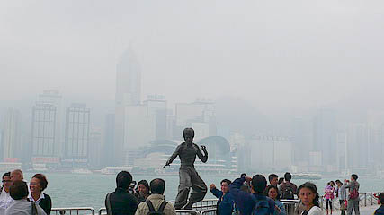
香港の摩天楼をバックにアチャ〜。で、観光客も師父をバックにアチョ〜。
中環の摩天楼にひとりの巨大な男が立っていた。
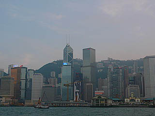
ビル丸ごとパンイチ男。香港滞在中、ず〜っと彼に睨まれていたような…
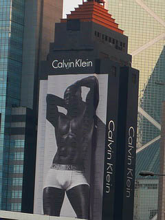
九龍の下町、油麻地。
グチャグチャしていて恐らく香港の中でも一番香港らしい場所だ。
そんな油麻地の夜は露天の生演奏カラオケ、略して生オケが人気だ…って誰もいないですけど。
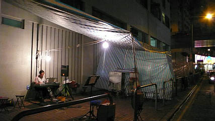
生オケよりも占い師ですね。
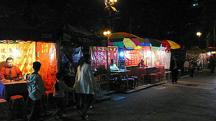
あちこちで見られるハリガミ。
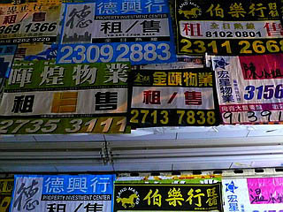
租/售とは恐らく売ったり買ったり貸したり借りたりの事。不動産投資関係のチラシだと思うが何故かそのすぐ下にはピンクチラシが同じような勢いで貼ってある。
↓ゲーセンです。
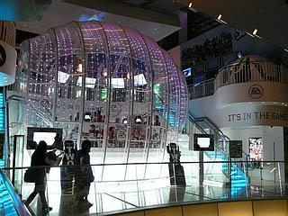
ホテルからの窓景。
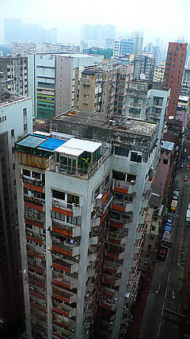
細長いビルの最上階に寄生するように建てられたペントハウス。
そこに住む人の生き様を想像してしまう。
アメニティなどという概念とは無縁のサバイバル都市、香港で暮らすのは中々ハードなようだ。
香港珍寺遊戯2
終劇
珍寺大道場 HOME